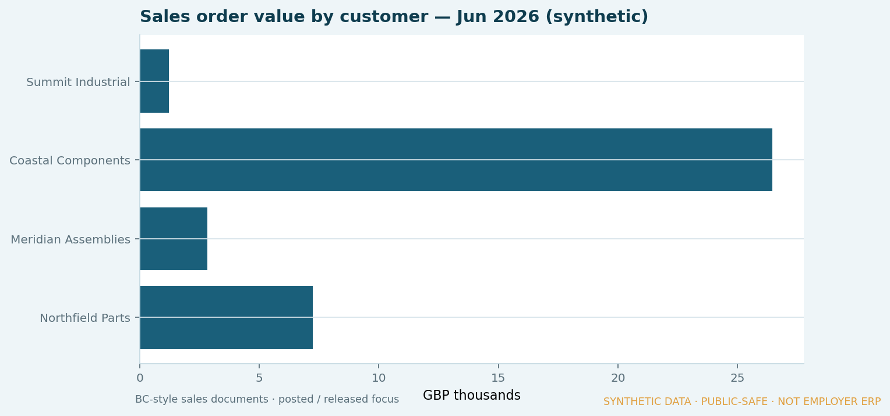
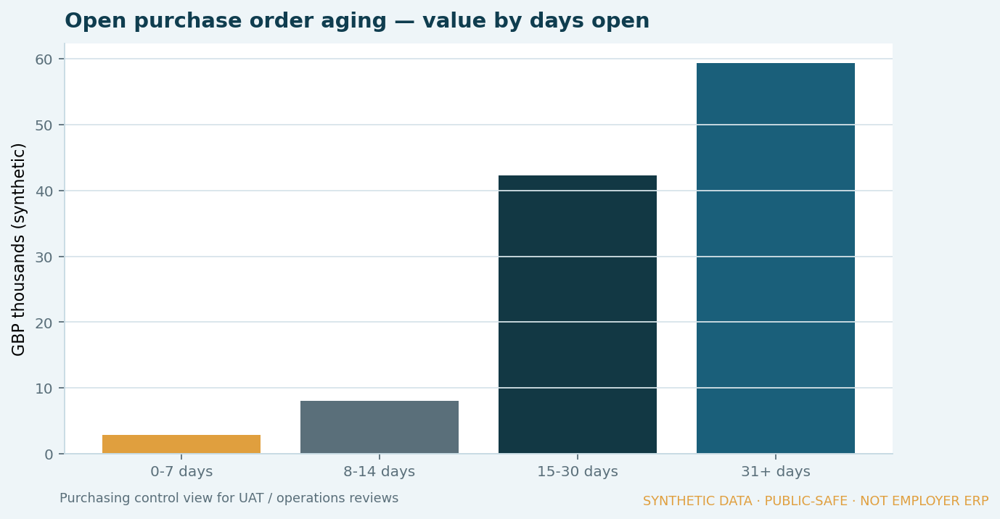
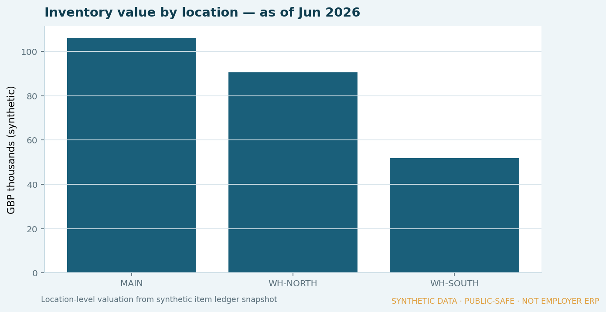
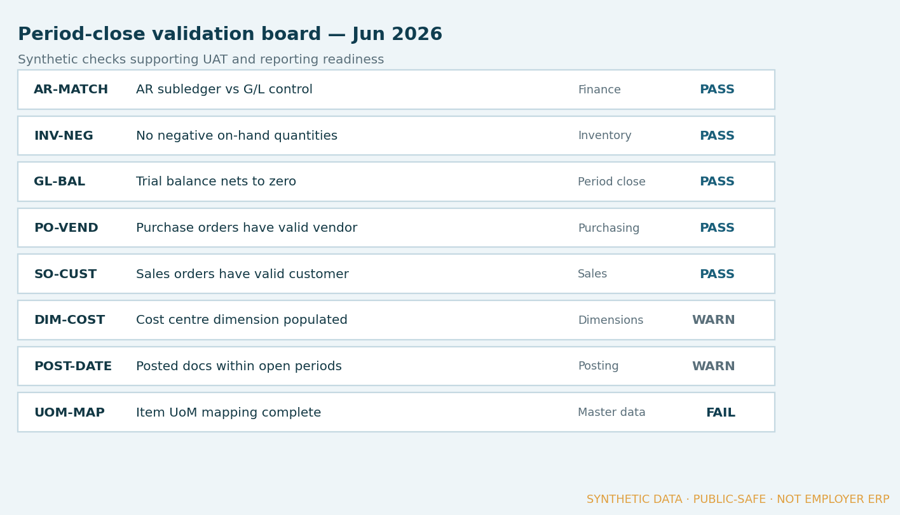

← Work · ERP & Business Applications
Synthetic demo · Evidence published
ERP reporting & Business Central support
A public-safe reference for how reporting requirements, data validation and stakeholder views sit around a Dynamics 365 Business Central-style environment — without publishing employer screens or client data.

Business context
ERP programmes need reporting that matches how finance and operations actually work — not only a system go-live. Sales, purchasing and inventory views have to be trustworthy before people stop relying on spreadsheets.
The problem
Reporting requirements, data validation and user adoption often lag configuration work, which creates gaps between the system and day-to-day decisions.
My role
Contribute data and reporting expertise: requirements conversations, validation support, UAT support and stakeholder understanding — not ownership of full Business Central configuration.
Approach
- Clarify reporting needs with finance and operational stakeholders.
- Support data checks and validation during implementation cycles.
- Build a synthetic BC-style model covering sales, purchasing and inventory.
- Publish labelled management-style stills that show what “reporting readiness” looks like.
- Keep the contribution boundary explicit: reporting and validation, not full ERP ownership.
Architecture / model
See the process flow above. Operational evidence below focuses on sales, purchasing, inventory and validation — not a composed KPI dashboard as the lead visual.
Business logic (in the stills)
- Sales order value by customer and document status
- Open purchase-order aging for purchasing control
- Inventory valuation by location
- Period-close validation board (Pass / Warn / Fail)
Controls
- Master-data and posting checks called out as Pass / Warn / Fail
- Document status mix visible for UAT conversations
- Clear lineage: CSVs → measures → labelled stills
- Every visual watermarked as synthetic / not employer ERP
Result
Published evidence from a synthetic Business Central-style model — reporting and validation views for stakeholder conversations. No internal screens or client data.




Source tables (CSV):
What I am learning
How to keep ERP reporting conversations grounded in checks people can review — so go-live is not confused with “finance and ops can trust the numbers.”
Public-disclosure note
This case uses synthetic companies, items and figures only. It does not represent discoverIE data, Business Central configuration, mappings or internal architecture.